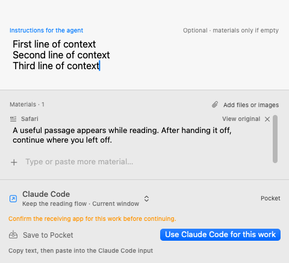
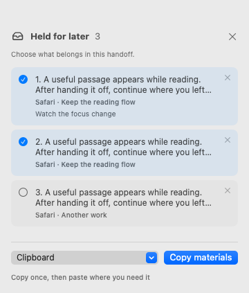
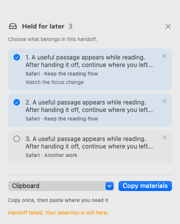
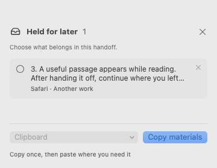

A quieter handoff.
Bring up a compact panel from the app you are using. Confirm a destination, add a note, and hand off. Keep a shelf in the corner for material you want to return to.
38 / 38
Know where it goes.
A work name, its receiving app, and the actual next action. The panel takes keyboard input while the source app stays active.

Make a changed receiver explicit.
A changed receiving app asks for confirmation before the handoff. The panel grows to fit a longer note.


Choose what travels together.
Select a subset from the corner shelf. Keep each source and note, in the order the materials were held.


Keep a failed handoff recoverable.
When a handoff fails, the materials and selection stay available for another attempt.


Leave the rest for later.
Successful preparation removes only the selected shelf entries. Unselected material stays held, and originals remain in the Inbox.


Checked on a hosted Mac
152 UI assertions passed across four language and appearance combinations. These 20 images were rendered from production views with fixture data and visually reviewed.
Keyboard focus, native text input, destination menus, dismissal and draft preservation, material selection and retry after failure.
What this preview means
A work name currently remembers a receiving app, not a specific conversation. Filling a draft brings that app forward for review; copying and holding preserve the source context.
Logged-in agent delivery, VoiceOver speech, multiple displays and fullscreen behavior still need integration acceptance. Copied or prepared does not mean the agent executed the task.